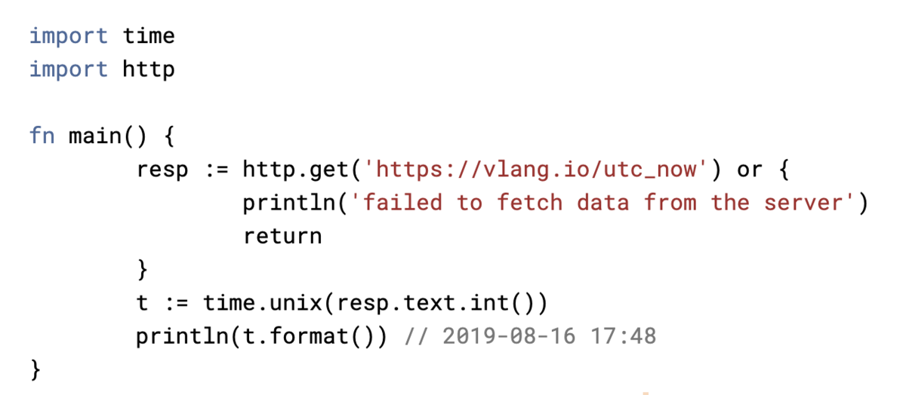

投稿日: 2020/02/28 06:37:44
カテゴリ: なし
サムネイル: 
先日からRust言語にハマっていて、ついでに久々にベンチマーク対決を眺めていたら、V言語という見慣れない言語を発見。どうやら、まだ公開されて半年くらいの新しい言語らしい。
V言語の最大の特徴はシンプルさと高速さ。C言語並みに高速で、かつ省メモリ・小サイズというのはかなり期待が持てる。（追記: 実際のベンチマーク速度は、確かに高速だが、RustやNimほどではなさそう。）
細かな文法については以下が詳しい。
構文は本当にシンプルで、習得が短期間でできることを謳っている。Rustゆずりの短い予約語もあって、とても可読性が高い。（予約語の付け方は、Rustに似ている点が多い。構文はGoに似てる。）
サンプルコードは以下の news_fetcher.v あたりが分かりやすい。（記事に埋め込もうと思ったけれど、まだはてなのシンタックスハイライトに対応しておらず、読みにくかった。）
個人的には、ScalaとKotlinの構図によく似ていると感じていて、RustがScalaだとすると、V言語がKotlin。
Rust言語は非常に立ち位置がScalaに似ていて、記述力と生産性が非常に高い言語である一方で、概念が多く、学習コストが非常に高い。一方のV言語は、まさにKotlinのようにシンプルで、それでいて今までの言語の良さを継承していて使い勝手が良い。
言語としての構文要素や概念が少ないので、シンプルすぎじゃないかと思うくらいだけど、ぱっと見た感じではよく設計されていて、過不足はなさそう。（Optionの?の扱いとかはKotlin風で、あとはGoとRustの影響が大きい。）
まだまだアーリーステージの言語なので、代替言語となり得るかは、これからに期待。
余談だけれど、自分は何度かNim言語に触っては結局使うことがなかった経緯があって、結局Rustに落ち着いているのは、やっぱりGCがないのが大きい。Nim言語は可読性と動作速度は非常に魅力だけれど、やはりGCがついている言語というのは、C/C++に慣れていると何かと導入のネックになりやすい。
その点、V言語ははじめからGCを前提としない独自のメモリ管理をうたっているので、もし実際にGCなしでメモリ管理がうまくできるのであれば、とても期待が持てる。（追記: メモリ管理は開発途上で今後に期待。詳しくは末尾の追記参照。）
まだ本当に初見だけれど、参考記事をいくつか眺めている感じでは、V言語の特徴はやはり高い可読性と、高速なコンパイル速度にあると思う。
例えばRust言語は、可読性は慣れると高い方だが、慣れないと読みづらく、難易度が高い。一方でV言語は、可読性が非常に高く、何より難易度が低い。One way to do somethingを掲げているだけあって、ループ構造がforしかないなど、誰が書いてもシンプルになるのはPythonに似ている気がする。
あと個人的には生成されたバイナリサイズが小さいのも魅力だと感じていて、このあたりも非常にKotlinの特徴と似ている気がする。
もっと言語として完成度が上がってくれば、このあたりの魅力が非常に強みになる言語だと思う。
早速使ってみたい感じはすごくする一方で、まだ公開されて日が浅く、ドキュメントがあまり充実していない。
特に気になるメモリ管理の部分もまだドキュメントが整備されておらず、詳細を確認するにはGitHubを追っていくしかない模様（誰か英語で記事書いてたりするかも？）。
導入実績も非常に少ないので、まだ実践で使うには情報があまりに少ないという印象だけれど、RustやZigに次ぐGCのない言語として、期待大。
V言語のメモリ管理周りは特に気になるので、今後追記していきたい。
この記事を書いてすぐ、GitHubやRedditのいくつかのスレッドを見てみたが、どうやらメモリ管理周りは、まだ未完成の部分が多い。
特に、Hello Worldでメモリリークが検出されるなど、2020年2月時点ではまだまだメモリリークに関する問題点は多い。それらの多くについては、コンパイル時にASTを分析することで自動的に最適化しようと計画されているようだが（一部実装されているらしい）、既存のアルゴリズムの使用が予定されていて、Rustのように新規のメモリ管理の仕組みが存在するわけではなさそう。
V言語フォーラムのメモリ管理についてのスレッドでも議論が交わされているが、そのコンパイル時のアルゴリズムもまだまだ選定段階・実験段階のようで、この議論などを見る感じでは、まだまだV言語はアーリーステージで、実際のプロダクトに利用できるのはかなり先になりそうな印象。（ただ逆に、メモリ管理まわりの実装さえ進めば、ぐんと実用的になりそうな予感もする。）
ちなみにV言語の更新頻度は、公開当初に比べると少し落ちていて、まだ導入事例や企業のバックアップなどもないようなので、これからどの程度コミットが続いていくかに期待したい。